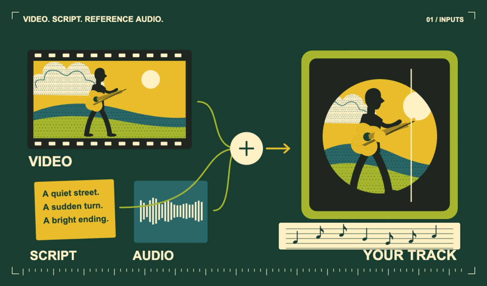

01
Granular
control.
Ask Taan to only change parts of the song, specific instruments or specific timings and get exactly what you asked for instead of a fresh generation.
A fundamentally different generation process. Precise control over what plays, when it plays, and how it changes, from any input.
Today’s frontier music models generate a track in one black-box pass, from a prompt straight to audio. Great for catchy songs. Hard to direct. Ask for a beat drop at exactly 0:12 and most of the time you won’t get it. Bigger models trained on more songs won’t fix it, because songs aren’t written to a timeline and real music isn’t made in one pass.
01
Ask Taan to only change parts of the song, specific instruments or specific timings and get exactly what you asked for instead of a fresh generation.
02
Taan takes any combination of the three to create your track.

03 / WHAT THIS UNLOCKS
Start with a hum, exact notes, MIDI, an image, a video or a script. Tell Taan what happens and when. Change one part while the music keeps playing, without regenerating from scratch.
Each capability follows from the architecture. None is a feature added on top.
04 / WHAT WE DO DIFFERENTLY
A foundation music model built for precise control. Taan turns complex direction into a musical plan, composes each part, and performs it on cue. One model, across creative tools, media and interactive experiences.
The architectural difference: planning, composition and performance are separate, steerable stages. Control is built into generation itself.
THE PROOF · TIMING SPACE BENCHMARK
On control, Taan outperforms every frontier music model we tested.
Published temporal-control evaluation. This comparison measures control, not overall audio quality.
instructions followed
Taan 96.1% · Next best 28.9%
fewer missed instructions
Taan 3.9% · Next best 71.1%
250 prompts · 30-second instrumental tracks · Next best: ElevenLabs v2
71.1% ÷ 3.9% ≈ 18.2× lower failure rate. Published August 2026.
WHERE THIS GOES
Controllable music is the foundation. Next: models that understand the real world, who’s listening, what they’re watching, and where they are, and compose for that moment.
We’re building the models behind every piece of music made on the fly.
With humans as the creators.
WHY US
We model music the way it has always been made. Our team brings musical practice and machine learning research to the same score.
For independent voices and everyday making.
$15/ month
For teams with more stories to tell.
$45/ month
A setup that moves at your scale.
Custom
Every idea has a sound.
Make yours original.